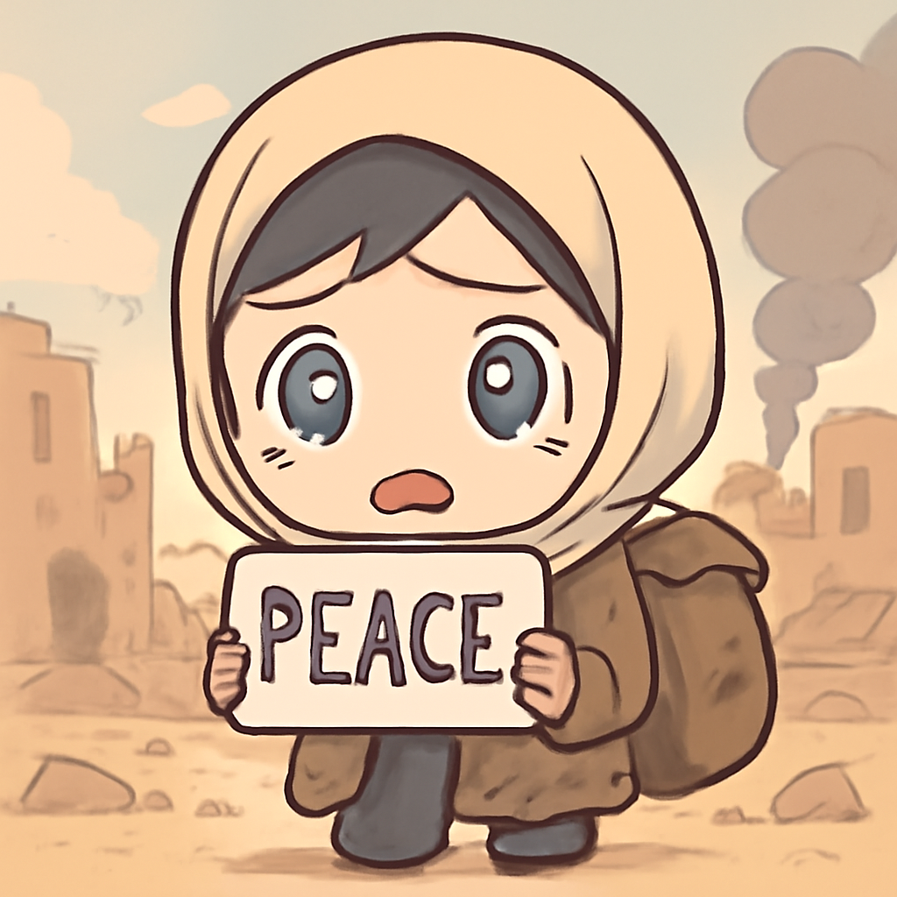

其一 · 法國 · 死亡人數因熱浪飆升
法國因熱浪造成的溺水死亡人數高達四十人。
法國最近面臨嚴重熱浪，自上週四以來，已經有四十人因溺水而喪生。法國總理塞巴斯蒂安·勒科魯警告，這場熱浪讓人們的安全成了大問題。天氣太熱，連水裡的魚都想上岸喘口氣了！
🔗 原始新聞 ↗
2026-06-24 · 以古觀今，以笑抗愁
法國因熱浪造成的溺水死亡人數高達四十人。
法國最近面臨嚴重熱浪，自上週四以來，已經有四十人因溺水而喪生。法國總理塞巴斯蒂安·勒科魯警告，這場熱浪讓人們的安全成了大問題。天氣太熱，連水裡的魚都想上岸喘口氣了！
🔗 原始新聞 ↗
伊朗試圖收取過境費，造成國際水域緊張。
伊朗最近在霍爾木茲海峽加強控制，甚至計劃對通過的船隻收取費用。美國國務卿馬可·魯比奧警告，這樣的做法將不會被接受。這就像在高速公路上設置過路費，卻沒有任何服務可言！
🔗 原始新聞 ↗
以色列軍隊在南黎巴嫩開火，造成兩人死亡。
以色列軍隊在南黎巴嫩開火，並聲稱擊斃了兩名真主黨成員。這一行動引發了黎巴嫩當局的不滿，指控以色列違反了停火協議。可見，在這個地區，和平的休假似乎總是短暫的。
🔗 原始新聞 ↗
美國警告蘇丹的暴行即將發生。

在蘇丹的埃爾奧貝德，隨著戰鬥加劇，美國警告當地即將發生重大暴行。這個地區的戰略位置讓各方勢力緊張，許多無辜民眾的安全受到威脅。希望和平的聲音能夠響起，讓這裡的人民不再遭受戰火之苦。
🔗 原始新聞 ↗
美國最高法院裁定囚犯無法訴訟獲得賠償。
美國最高法院裁定，曾經的囚犯無法對強行剪掉他們的髮型提起訴訟，這讓不少人感到憤怒。這看似保護了監獄的規則，但卻讓人思考：個人信仰和權利的邊界在哪裡呢？
🔗 原始新聞 ↗